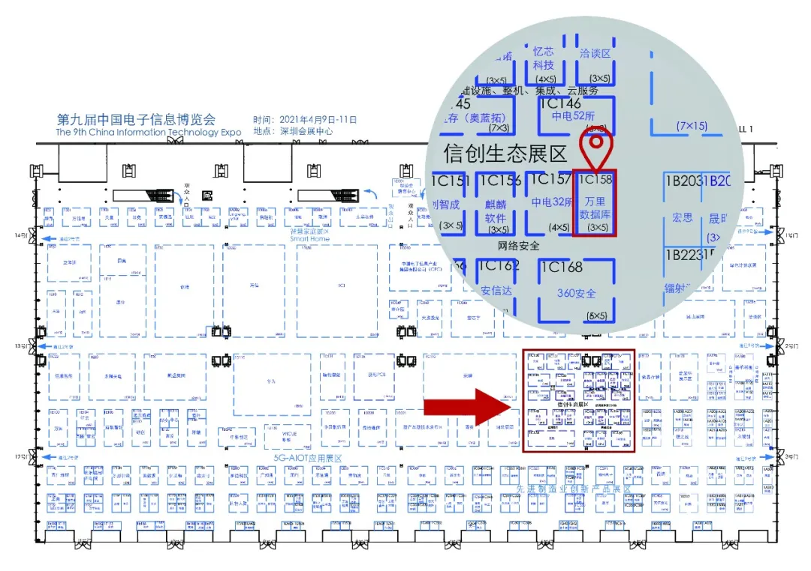

展会 | 叮！万里数据库向您发出一封2021中国电子信息博览会邀请函~
新一代信息技术产业的国家级展示平台
中国电子第一展
最权威的电子元器件全产业链展示平台
中国历史最悠久、最权威的电子行业展会
……
这么高规格的展会
它就是
中国电子信息博览会
2021年4月9-11日
以“创新驱动 高质量发展”为主题的
2021CITE将在深圳启幕
作为数据库头部企业
万里数据库携分布式数据库核心产品盛装亮相
全面展示国产数据库创新技术成果与落地实践
为信创产业的高质量发展贡献万里力量
2021年4月9-11日
深圳会展中心1号馆信创生态展区1C158
中国电子信息博览会（CITE）是工业和信息化部与深圳市人民政府联手打造的国家级电子信息全产业链展示平台。本届博览会将围绕“5G+、信息技术应用创新、显示技术、基础电子和IC技术、大数据技术、智慧家庭、工业互联网等行业热点话题，集中展示包括智慧家庭、5G+物联网、智能网联汽车、网信产业、工业互联网、集成电路、新型显示、大数据存储、基础电子元器件等代表电子信息产业未来发展的核心内容。
当前，信创产业主要产品和核心技术已经从“基本可用”向“好用易用”大步迈进，体系化、生态化和产业集群初步形成，信创产业日益成为拉动经济发展的重要抓手。万里数据库受邀信创生态展区，为推动完善国产软硬件生态及信创产业繁荣、高质量发展贡献全力。
我们在这里

万里数据库展位——1号馆1C158
让我们相约2021中国电子信息博览会
携手前行
共同推动信创产业的高质量发展
1号馆信创生态展区—1C158展位
万里数据库诚邀您的莅临！
推荐阅读1.要闻 | 万里数据库荣膺2020年度数据库创新产品奖
2. 2021央采榜单花落谁家？万里安全数据库乘风而上 实力入围
3. 生态 | 万里数据库与电科云达成全面战略合作 共推信创产业生态做大做强


扫码二维码
关注公众号